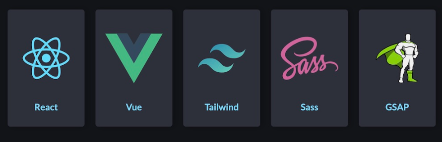

Práctica 1
En esta práctica pusimos en prueba los conocimientos vistos en la clase del 18-08, de acuerdo a la Evidencia 1.
Fecha de los commits
14 al 15 de agosto
Práctica 2
En esta práctica se creó una carpeta personal en la organización y dentro de la misma se agregó un archivo llamado index.html.
Fecha de los commits
20 al 22 de Agosto
Práctica 3
Se modificó la Evidencia 1. Se agregó una subcarpeta y se incorporaron 5 archivos HTML con su respectiva estructura.
Fecha de los commits:
27 al 29 de Agosto
Práctica 4
Apliqué un estilo personalizado a mi link de la página principal de la organización. Los estilos que utilicé los guardé dentro de mi carpeta en la organización.
Link
Fecha de los commits:
1 al 3 de Septiembre.
Práctica 5
En esta práctica utilizaremos los selectores vistos en clase y los aplicaremos en alguna de nuestras páginas de Pasatiempos_Ver2.
Fecha de los commits:
1 al 3 de Septiembre.
Práctica 6
Utilizamos flexbox para crear un documento HTML donde diseñamos lo que se muestra en la imagen siguiente:
Fecha de los commits:
10 al 12 de Septiembre.